Last updated: 2019-12-06
Checks: 7 0
Knit directory: misc/
This reproducible R Markdown analysis was created with workflowr (version 1.5.0). The Checks tab describes the reproducibility checks that were applied when the results were created. The Past versions tab lists the development history.
Great! Since the R Markdown file has been committed to the Git repository, you know the exact version of the code that produced these results.
Great job! The global environment was empty. Objects defined in the global environment can affect the analysis in your R Markdown file in unknown ways. For reproduciblity it’s best to always run the code in an empty environment.
The command set.seed(20191122) was run prior to running the code in the R Markdown file. Setting a seed ensures that any results that rely on randomness, e.g. subsampling or permutations, are reproducible.
Great job! Recording the operating system, R version, and package versions is critical for reproducibility.
Nice! There were no cached chunks for this analysis, so you can be confident that you successfully produced the results during this run.
Great job! Using relative paths to the files within your workflowr project makes it easier to run your code on other machines.
Great! You are using Git for version control. Tracking code development and connecting the code version to the results is critical for reproducibility. The version displayed above was the version of the Git repository at the time these results were generated.
Note that you need to be careful to ensure that all relevant files for the analysis have been committed to Git prior to generating the results (you can use wflow_publish or wflow_git_commit). workflowr only checks the R Markdown file, but you know if there are other scripts or data files that it depends on. Below is the status of the Git repository when the results were generated:
Ignored files:
Ignored: .Rhistory
Ignored: .Rproj.user/
Note that any generated files, e.g. HTML, png, CSS, etc., are not included in this status report because it is ok for generated content to have uncommitted changes.
These are the previous versions of the R Markdown and HTML files. If you’ve configured a remote Git repository (see ?wflow_git_remote), click on the hyperlinks in the table below to view them.
| File | Version | Author | Date | Message |
|---|---|---|---|---|
| Rmd | f039025 | Dongyue Xie | 2019-12-07 | wflow_publish(“analysis/consulting.Rmd”) |
| html | fda926a | Dongyue Xie | 2019-12-06 | Build site. |
| Rmd | d5546bc | Dongyue Xie | 2019-12-06 | wflow_publish(“analysis/consulting.Rmd”) |
If use “Normalized” as response to perform 2-way ANOVA, then:
Conclusions from ANOVA:
See detailed analysis below:
datax = read.csv('~/Downloads/Igha.csv',header = TRUE,skip=1)
# Use Treatment, Genotype and Normzalized value
datax = datax[,c(10,3,4)]
#table(datax$Genotype,datax$Treatment)
# fit 2-way anova
anova.fit = aov(Normalized ~ Treatment * Genotype, data = datax)
# check asusmptions
plot(anova.fit,1)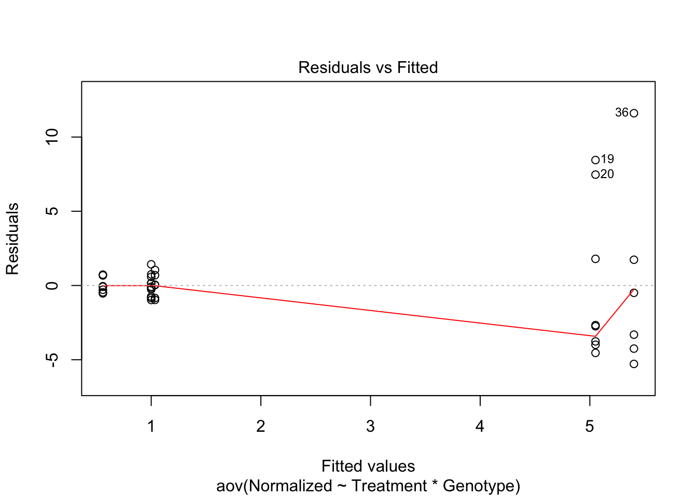
| Version | Author | Date |
|---|---|---|
| fda926a | Dongyue Xie | 2019-12-06 |
plot(anova.fit,2)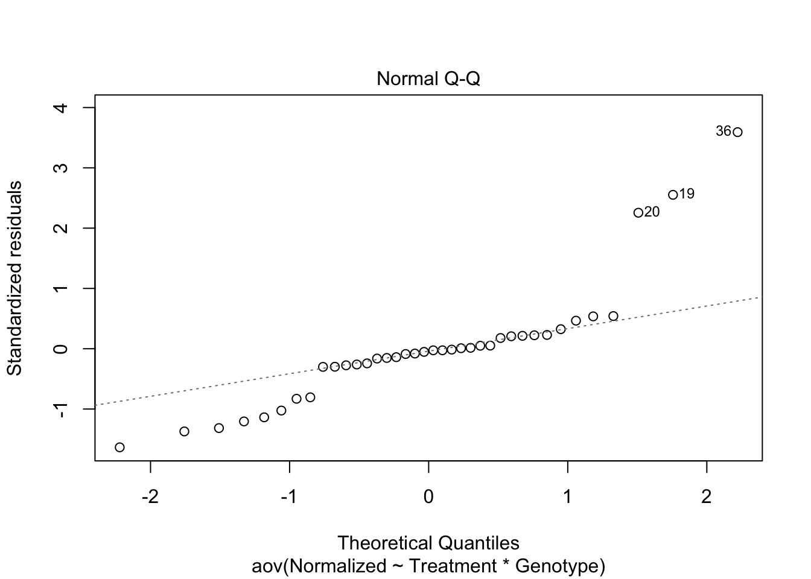
| Version | Author | Date |
|---|---|---|
| fda926a | Dongyue Xie | 2019-12-06 |
The first plot suggests that variance is not homogeneous. The second plot suggests that the response(Normalized expression) is not normal distributed.
So we need to do some transformation of the response.
library(car)Loading required package: carDatadata.trans = boxCox(anova.fit)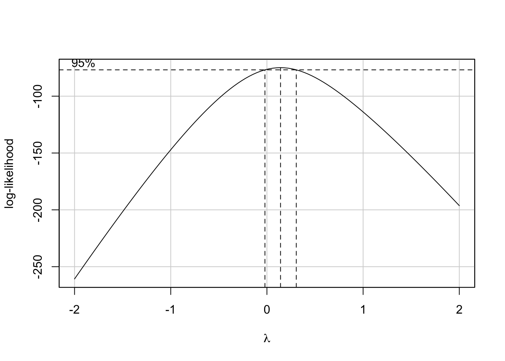
| Version | Author | Date |
|---|---|---|
| fda926a | Dongyue Xie | 2019-12-06 |
Since 0 is in the 95% confidence interval ,we can just take log tranformation.
datax[,1] = log(datax[,1])Now, we are ready to fit the 2-way anova model. Since the desing is unbanlanced, we also need to make type III adjustment.
anova.fit = aov(Normalized ~ Treatment * Genotype, data = datax)
Anova(anova.fit,type='III')Anova Table (Type III tests)
Response: Normalized
Sum Sq Df F value Pr(>F)
(Intercept) 8.808 1 4.2973 0.04631 *
Treatment 11.594 2 2.8280 0.07397 .
Genotype 0.128 1 0.0625 0.80414
Treatment:Genotype 0.601 2 0.1465 0.86432
Residuals 65.593 32
---
Signif. codes: 0 '***' 0.001 '**' 0.01 '*' 0.05 '.' 0.1 ' ' 1This suggests that Igha gene expression does not differ significantly among genotypes and treatments.
datax = read.csv('~/Downloads/Reg3b.csv',header = TRUE,skip=1)
# Use Treatment, Genotype and Normzalized value
datax = datax[,c(10,3,4)]
#table(datax$Genotype,datax$Treatment)
# fit 2-way anova
anova.fit = aov(Normalized ~ Treatment * Genotype, data = datax)
# check asusmptions
plot(anova.fit,1)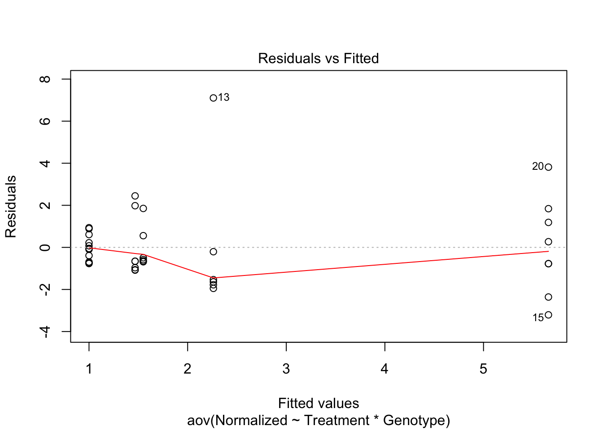
| Version | Author | Date |
|---|---|---|
| fda926a | Dongyue Xie | 2019-12-06 |
plot(anova.fit,2)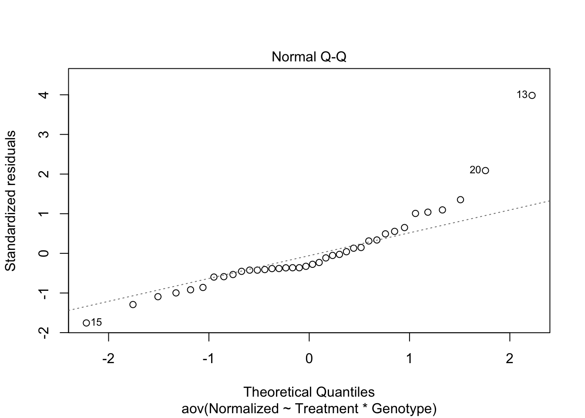
| Version | Author | Date |
|---|---|---|
| fda926a | Dongyue Xie | 2019-12-06 |
data.trans = boxCox(anova.fit)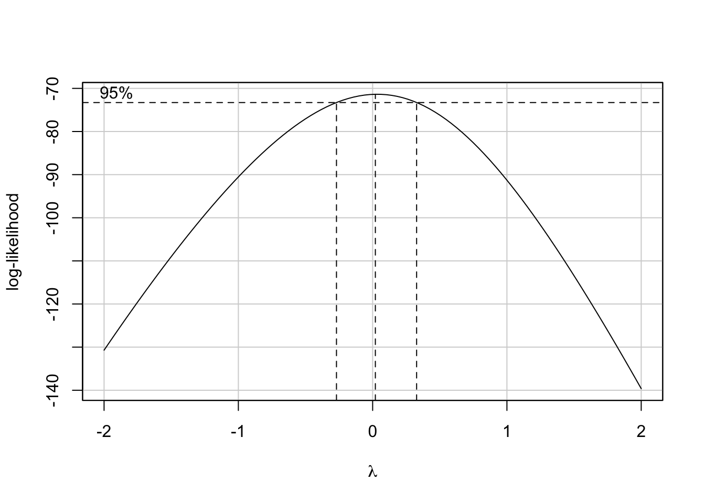
| Version | Author | Date |
|---|---|---|
| fda926a | Dongyue Xie | 2019-12-06 |
datax[,1] = log(datax[,1])
anova.fit = aov(Normalized ~ Treatment * Genotype, data = datax)
Anova(anova.fit,type='III')Anova Table (Type III tests)
Response: Normalized
Sum Sq Df F value Pr(>F)
(Intercept) 21.8763 1 31.2264 3.588e-06 ***
Treatment 15.3239 2 10.9368 0.0002401 ***
Genotype 6.3682 1 9.0901 0.0049996 **
Treatment:Genotype 3.5287 2 2.5185 0.0964352 .
Residuals 22.4182 32
---
Signif. codes: 0 '***' 0.001 '**' 0.01 '*' 0.05 '.' 0.1 ' ' 1This suggests: Genotypes and Treatment are significantly associated with Reg3b gene expression.
datax = read.csv('~/Downloads/Jchain.csv',header = TRUE,skip=1)
# Use Treatment, Genotype and Normzalized value
datax = datax[,c(10,3,4)]
#table(datax$Genotype,datax$Treatment)
# fit 2-way anova
anova.fit = aov(Normalized ~ Treatment * Genotype, data = datax)
# check asusmptions
plot(anova.fit,1)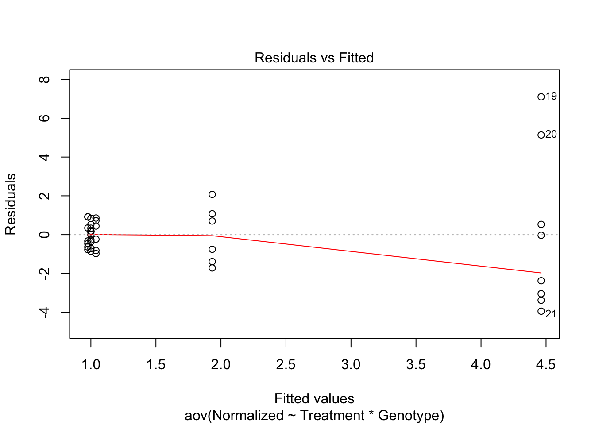
| Version | Author | Date |
|---|---|---|
| fda926a | Dongyue Xie | 2019-12-06 |
plot(anova.fit,2)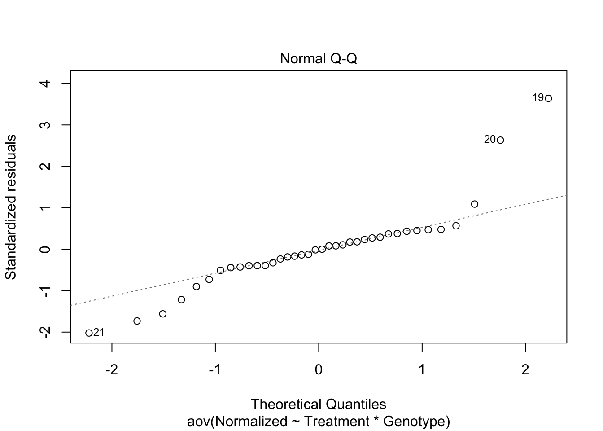
| Version | Author | Date |
|---|---|---|
| fda926a | Dongyue Xie | 2019-12-06 |
data.trans = boxCox(anova.fit)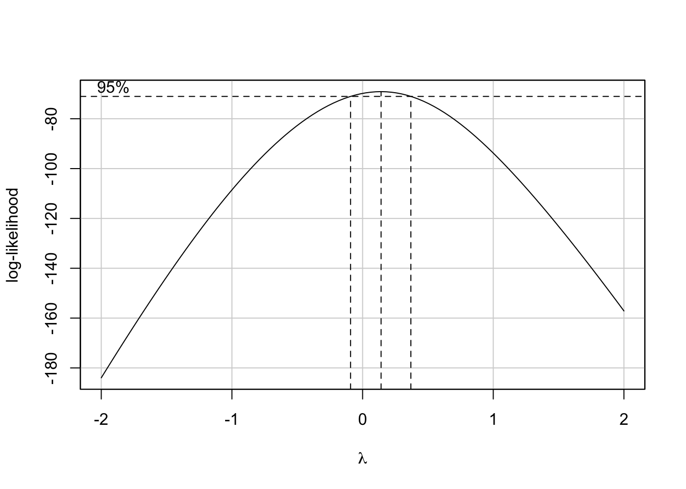
| Version | Author | Date |
|---|---|---|
| fda926a | Dongyue Xie | 2019-12-06 |
datax[,1] = log(datax[,1])
anova.fit = aov(Normalized ~ Treatment * Genotype, data = datax)
Anova(anova.fit,type='III')Anova Table (Type III tests)
Response: Normalized
Sum Sq Df F value Pr(>F)
(Intercept) 8.654 1 8.0776 0.007738 **
Treatment 9.549 2 4.4566 0.019615 *
Genotype 2.142 1 1.9990 0.167061
Treatment:Genotype 1.771 2 0.8266 0.446660
Residuals 34.284 32
---
Signif. codes: 0 '***' 0.001 '**' 0.01 '*' 0.05 '.' 0.1 ' ' 1This suggests Treatment is significantly associated with Jchain gene expression.
datax = read.csv('~/Downloads/Saa1.csv',header = TRUE,skip=1)
# Use Treatment, Genotype and Normzalized value
datax = datax[,c(10,3,4)]
#table(datax$Genotype,datax$Treatment)
# fit 2-way anova
anova.fit = aov(Normalized ~ Treatment * Genotype, data = datax)
# check asusmptions
plot(anova.fit,1)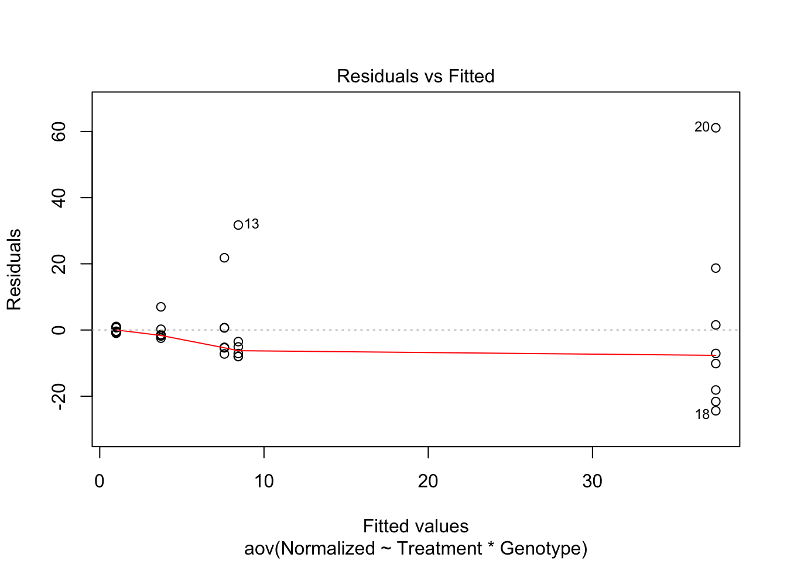
| Version | Author | Date |
|---|---|---|
| fda926a | Dongyue Xie | 2019-12-06 |
plot(anova.fit,2)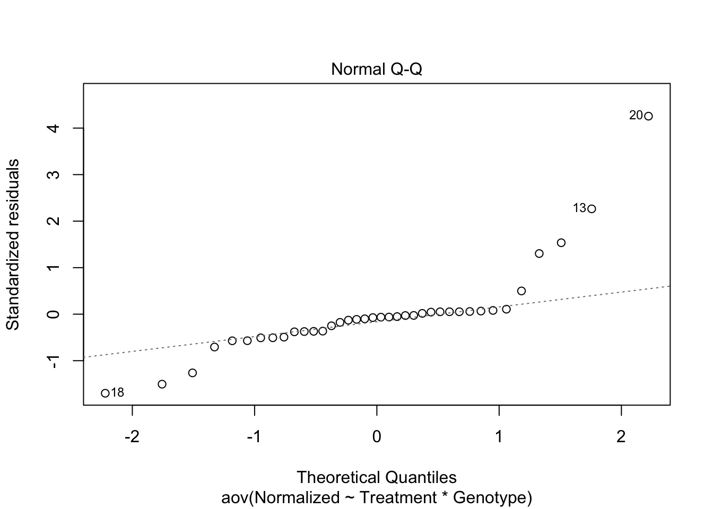
| Version | Author | Date |
|---|---|---|
| fda926a | Dongyue Xie | 2019-12-06 |
data.trans = boxCox(anova.fit)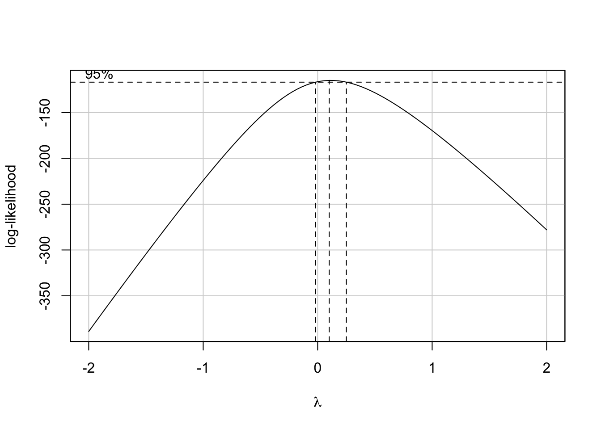
| Version | Author | Date |
|---|---|---|
| fda926a | Dongyue Xie | 2019-12-06 |
datax[,1] = log(datax[,1])
anova.fit = aov(Normalized ~ Treatment * Genotype, data = datax)
Anova(anova.fit,type='III')Anova Table (Type III tests)
Response: Normalized
Sum Sq Df F value Pr(>F)
(Intercept) 93.254 1 54.877 1.988e-08 ***
Treatment 56.820 2 16.718 1.070e-05 ***
Genotype 19.305 1 11.360 0.001973 **
Treatment:Genotype 13.289 2 3.910 0.030253 *
Residuals 54.378 32
---
Signif. codes: 0 '***' 0.001 '**' 0.01 '*' 0.05 '.' 0.1 ' ' 1This suggests that Genotypes and Treatment are significantly associated with Saa1 gene expression. Also, the relationship between Saa1 gene expression and treatment depends on genotype.
sessionInfo()R version 3.6.1 (2019-07-05)
Platform: x86_64-apple-darwin15.6.0 (64-bit)
Running under: macOS High Sierra 10.13.6
Matrix products: default
BLAS: /Library/Frameworks/R.framework/Versions/3.6/Resources/lib/libRblas.0.dylib
LAPACK: /Library/Frameworks/R.framework/Versions/3.6/Resources/lib/libRlapack.dylib
locale:
[1] en_US.UTF-8/en_US.UTF-8/en_US.UTF-8/C/en_US.UTF-8/en_US.UTF-8
attached base packages:
[1] stats graphics grDevices utils datasets methods base
other attached packages:
[1] car_3.0-5 carData_3.0-3
loaded via a namespace (and not attached):
[1] zip_2.0.4 Rcpp_1.0.2 cellranger_1.1.0
[4] compiler_3.6.1 pillar_1.4.2 later_1.0.0
[7] git2r_0.26.1 workflowr_1.5.0 forcats_0.4.0
[10] tools_3.6.1 zeallot_0.1.0 digest_0.6.21
[13] evaluate_0.14 tibble_2.1.3 pkgconfig_2.0.3
[16] rlang_0.4.0 openxlsx_4.1.4 curl_4.2
[19] yaml_2.2.0 haven_2.2.0 xfun_0.10
[22] rio_0.5.16 stringr_1.4.0 knitr_1.25
[25] fs_1.3.1 vctrs_0.2.0 hms_0.5.2
[28] rprojroot_1.3-2 glue_1.3.1 data.table_1.12.6
[31] R6_2.4.0 readxl_1.3.1 foreign_0.8-72
[34] rmarkdown_1.16 magrittr_1.5 whisker_0.4
[37] backports_1.1.5 promises_1.1.0 htmltools_0.4.0
[40] abind_1.4-5 httpuv_1.5.2 stringi_1.4.3
[43] crayon_1.3.4